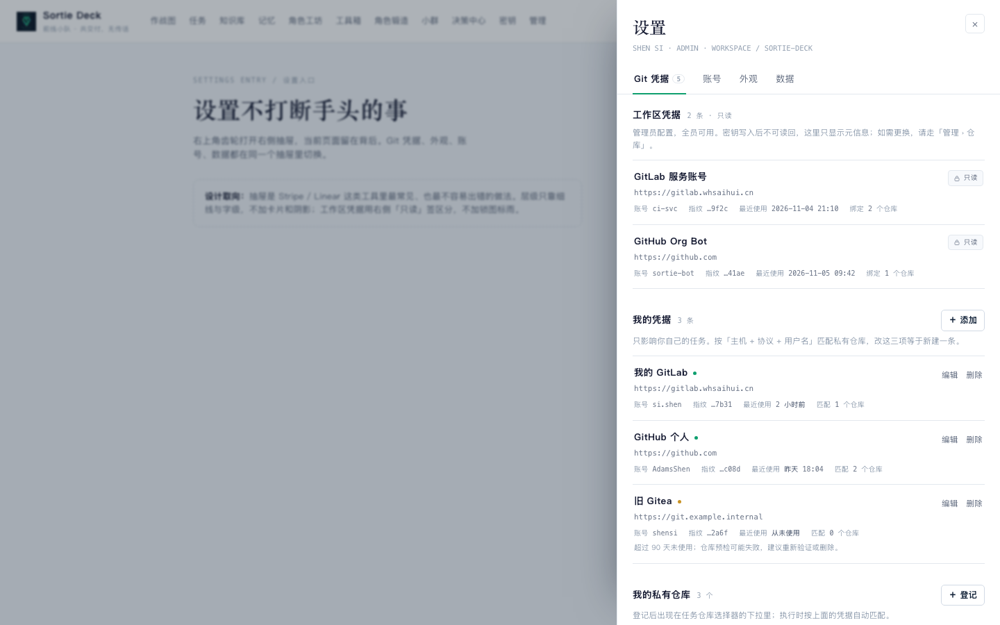
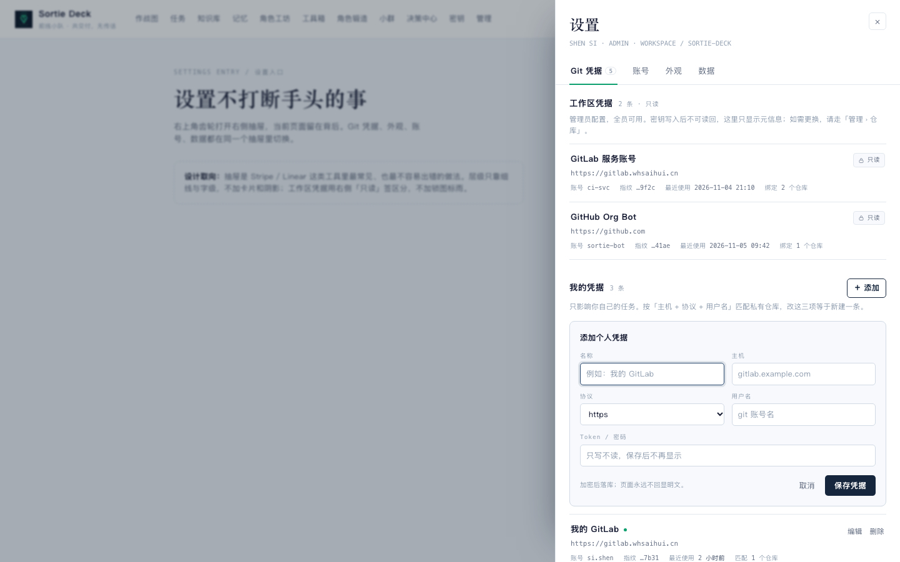
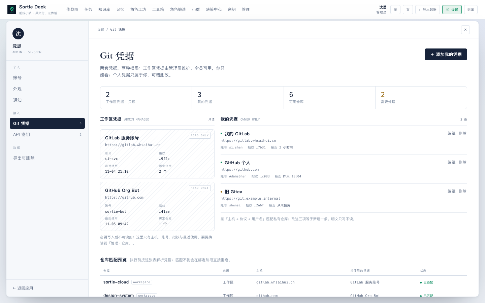
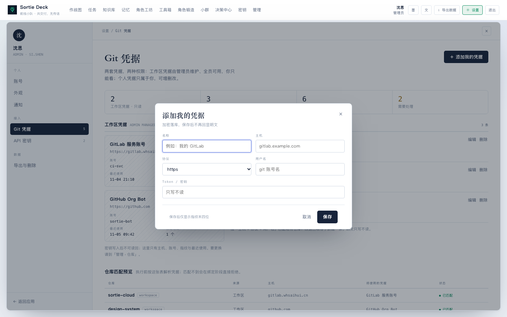
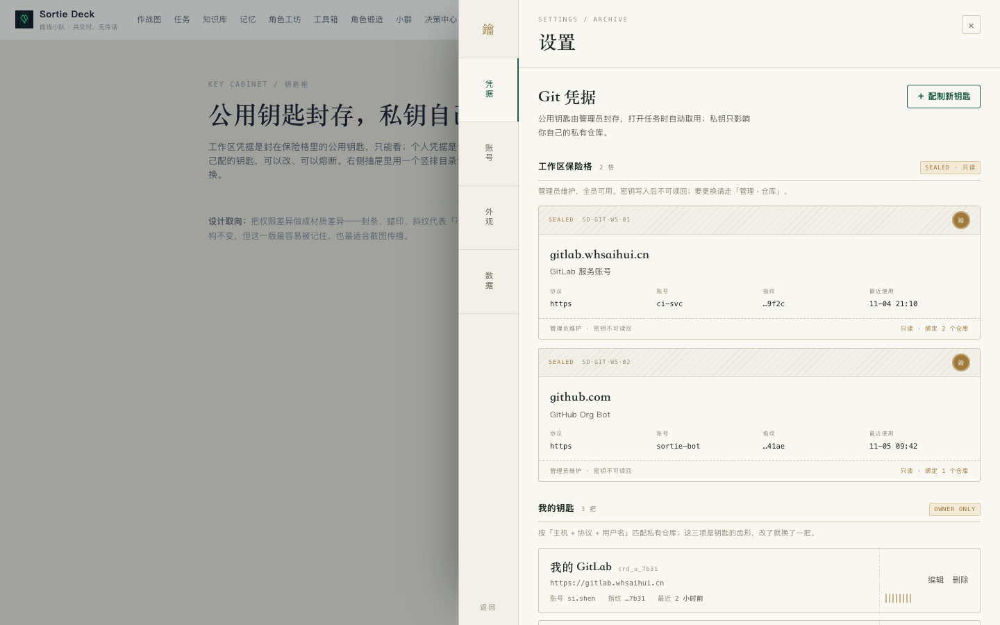
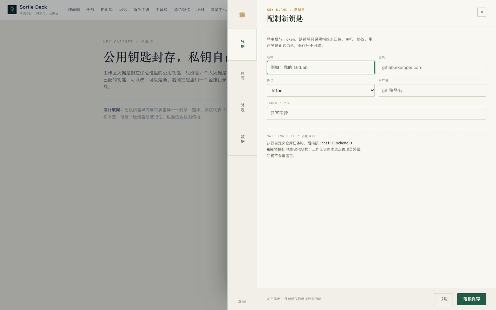

DESIGN REVIEW / 2026-11-05 / SETTINGS & GIT CREDENTIALS
设置不该另开一页
同一个需求，三种打开方式：右上角齿轮进入，右侧多个 tab，其中一页是 Git 凭据。
管理员配置的工作区凭据只读，自己的凭据可增删改查，密钥一律只写不读。
三版共用同一份内容与同一套交互约束，只换设计逻辑，方便横向比较。
TABS
4–6 个
账号 / 外观 / Git / 数据
01 / DRAWER
抽屉实用派
现实参照 · STRIPE / LINEAR SETTINGS
把设置做成一个不打断工作的右侧抽屉。顶部横排 tab，Git 页用两组行：
工作区凭据右侧一枚「只读」签，个人凭据行尾直接「编辑 / 删除」。
不靠卡片和阴影建立层级，最贴近现有产品。
OPEN右侧抽屉 · 552px
DENSITY中
COST低 · 单组件即可
MEMORY弱 · 稳

主视图：工作区只读 + 我的凭据 + 私有仓库MAIN

添加个人凭据：行内表单，主机与用户名是匹配键FORM
02 / CENTER
设置中心
最佳设计师 · RAMS 式系统化工作台
设置值得占用一整块工作面。左轨是目录，右侧是宽内容：
Git 页双栏并排——左只读、右可编辑，底部一条
「仓库 → 凭据」匹配预览，直接回答「这个仓库到底用了哪把钥匙」。
信息密度最高，适合重度用户。
OPEN全屏面板 · 左轨 + 双栏
DENSITY高
COST高 · 新路由/布局
MEMORY中 · 专业

主视图：读数条 + 只读/可编辑双栏 + 匹配预览MAIN

弹层新增：编辑时锁定主机/协议/用户名FORM
03 / VAULT
钥匙柜
轮盘 17 号 · 档案 / 保险库质感
把权限差异做成材质差异：工作区凭据封在带蜡印的保险格里，只能看；
个人凭据是带齿纹的钥匙，可以改配、可以熔断。右侧宽抽屉，内部竖排 tab，
最像编辑部档案室，也最容易截图被记住。
OPEN右侧宽抽屉 · 780px
DENSITY中高
COST中高 · 需要定制卡片
MEMORY强 · 有签名

主视图：竖排目录 + 封存的保险格 + 钥匙齿纹MAIN

配制单：新钥匙/改齿，右侧说明匹配规则FORM
怎么选
三版都能直接用；差别在「占用多少屏幕」与「权限差异说得多重」。
| 维度 | v1 抽屉实用派 | v2 设置中心 | v3 钥匙柜 |
|---|
| 最适合 | 想稳、想和现有页面统一 | 重度用户，经常核对仓库与凭据 | 想让人记住，愿意为设置页做一点“作品感” |
| 只读表达 | 行尾「只读」签，最轻 | 斜纹 + READ ONLY，清楚但不抢戏 | 封条 + 蜡印，权限差异最直观 |
| 增改体验 | 行内展开，改完即走 | 居中弹层，字段最完整 | 二级“配制单”，有仪式感 |
| 额外信息 | 私有仓库匹配状态 | 仓库 → 凭据匹配预览表 | 钥匙孔（每个仓库插了哪把钥匙） |
| 主要风险 | 容易“太普通” | 全屏设置可能压过任务本身 | 档案隐喻需要团队接受，卡片实现成本较高 |
| 建议 | 默认选它，改造成本最低 | 如果凭据/仓库是高频操作，选它 | 如果这页会对外演示，选它 |
三版共同遵守的产品约束
- 工作区凭据只读：所有版本都不提供编辑/删除入口；管理员同样只在此查看，维护走「管理 › 仓库」。
- 个人凭据可增删改查：新增、编辑、删除都有；删除必须二次确认，并提示会影响哪些仓库。
- 主机 / 协议 / 用户名是匹配键：编辑时锁定，改这三项等于新建一条，避免静默产生重复凭据。
- 密钥只写不读：保存后只显示指纹末四位；编辑时 Token 留空表示不修改。
- 两套凭据不互相覆盖：工作区仓库永远用管理员凭据；自定义仓库只按 host 匹配个人凭据。